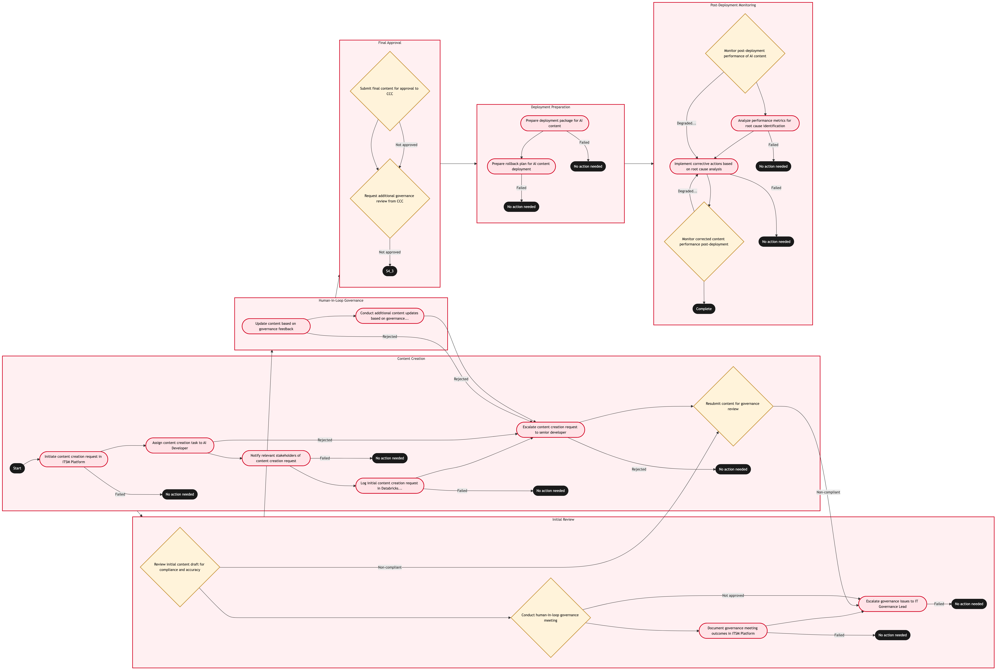

Updated 2026-08-21
Customer Facing Assistant Content Grounding
Process flow
Click to zoom

Process steps
▼
Phase 1 — Content Creation
6 steps
| Step | Activity | Role | System | Input | Output | KPI | Dec | Exc | Pain point |
|---|---|---|---|---|---|---|---|---|---|
| 1.1 | Initiate content creation request in ITSM Platform | IT Operations Analyst | ITSM PlatformC | Content brief from marketing or customer service team | ServiceNow ticket with detailed content requirements | Time to create a new ticket < 1 hour | N | Y | Delays in creating tickets due to system downtime |
| 1.2 | Assign content creation task to AI Developer | AI Developer | Databricks LakehouseB | ServiceNow ticket with detailed content requirements | Initial draft of AI-generated content | Content creation time < 4 hours | N | Y | Inconsistent quality due to varying AI model performance |
| 1.3 | Notify relevant stakeholders of content creation request | IT Operations Analyst | UNKNOWN (Integration Platform)U | ServiceNow ticket with detailed content requirements | Notification sent to stakeholders | Time to notify < 30 minutes | N | Y | Delays in notifications due to system integration issues |
| 1.4 | Log initial content creation request in Databricks Lakehouse | AI Developer | Databricks LakehouseB | ServiceNow ticket with detailed content requirements | Content creation record logged | Time to log < 1 minute | N | Y | Data loss due to logging errors in Databricks Lakehouse |
| 1.5 | Escalate content creation request to senior developer | Senior AI Developer | Databricks LakehouseB | Initial draft of AI-generated content and governance decision document | Revised content submission | Time to escalate < 1 hour | N | Y | Delays in escalation due to senior developer availability |
| 1.6 | Resubmit content for governance review | Content Review Specialist | UNKNOWN (Integration Platform)U | Revised content submission and governance decision document | Updated compliance check report | Time to resubmit < 1 hour | Y | N | Inconsistent review standards across different reviewers |
▼
Phase 2 — Initial Review
4 steps
| Step | Activity | Role | System | Input | Output | KPI | Dec | Exc | Pain point |
|---|---|---|---|---|---|---|---|---|---|
| 2.1 | Review initial content draft for compliance and accuracy | Content Review Specialist | AWSA | Initial draft of AI-generated content | Compliance check report | Time to review < 2 hours | Y | N | High volume of content drafts requiring manual review |
| 2.2 | Conduct human-in-loop governance meeting | Customer Communications Committee (CCC) Member | UNKNOWN (Integration Platform)U | Compliance check report and initial content draft | Governance decision document | Meeting duration < 1 hour | Y | N | Inconsistent governance decisions across different CCC members |
| 2.3 | Document governance meeting outcomes in ITSM Platform | Customer Communications Committee (CCC) Member | ITSM PlatformC | Governance decision document | Updated ServiceNow ticket with governance notes | Time to document < 30 minutes | N | Y | Delays in documentation due to system downtime |
| 2.4 | Escalate governance issues to IT Governance Lead | IT Governance Lead | UNKNOWN (Integration Platform)U | Governance decision document and compliance check report | Resolution plan for governance issues | Time to escalate < 2 hours | N | Y | Delays in escalation due to IT Governance Lead availability |
▼
Phase 3 — Human-in-Loop Governance
2 steps
| Step | Activity | Role | System | Input | Output | KPI | Dec | Exc | Pain point |
|---|---|---|---|---|---|---|---|---|---|
| 3.1 | Update content based on governance feedback | AI Developer | Databricks LakehouseB | Governance decision document and initial content draft | Updated AI-generated content | Time to update < 2 hours | N | Y | Complex updates requiring extensive manual adjustments |
| 3.2 | Conduct additional content updates based on governance issues | AI Developer | Databricks LakehouseB | Resolution plan for governance issues and initial content draft | Updated AI-generated content | Time to update < 2 hours | N | Y | Complex updates requiring extensive manual adjustments |
▼
Phase 4 — Final Approval
2 steps
| Step | Activity | Role | System | Input | Output | KPI | Dec | Exc | Pain point |
|---|---|---|---|---|---|---|---|---|---|
| 4.1 | Submit final content for approval to CCC | Content Review Specialist | ITSM PlatformC | Updated AI-generated content and governance decision document | ServiceNow ticket with final content submission | Time to submit < 30 minutes | Y | N | Delays in submitting tickets due to system integration issues |
| 4.2 | Request additional governance review from CCC | Content Review Specialist | UNKNOWN (Integration Platform)U | Updated AI-generated content and resolution plan for governance issues | ServiceNow ticket with request for additional review | Time to request < 1 hour | Y | N | Inconsistent governance decisions across different CCC members |
▼
Phase 5 — Deployment Preparation
2 steps
| Step | Activity | Role | System | Input | Output | KPI | Dec | Exc | Pain point |
|---|---|---|---|---|---|---|---|---|---|
| 5.1 | Prepare deployment package for AI content | IT Deployment Specialist | AWSA | Approved final content and governance decision document | Deployment package ready for launch | Time to prepare < 1 hour | N | Y | Incompatibilities between AI-generated content and existing systems |
| 5.2 | Prepare rollback plan for AI content deployment | IT Deployment Specialist | AWSA | Deployment package ready for launch | Rollback plan document | Time to prepare < 1 hour | N | Y | Incompatibilities between AI-generated content and existing systems |
▼
Phase 6 — Post-Deployment Monitoring
4 steps
| Step | Activity | Role | System | Input | Output | KPI | Dec | Exc | Pain point |
|---|---|---|---|---|---|---|---|---|---|
| 6.1 | Monitor post-deployment performance of AI content | IT Performance Analyst | SIEM and SOCU | Deployment package ready for launch | Performance metrics report | Response time < 2 seconds | Y | N | High false positive rates in performance monitoring |
| 6.2 | Analyze performance metrics for root cause identification | IT Performance Analyst | SIEM and SOCU | Performance metrics report | Root cause analysis report | Time to analyze < 2 hours | N | Y | High false positive rates in performance monitoring |
| 6.3 | Implement corrective actions based on root cause analysis | IT Operations Analyst | AWSA | Root cause analysis report and deployment package ready for launch | Corrected AI-generated content | Time to implement < 1 hour | N | Y | Delays in implementing corrective actions due to system integration issues |
| 6.4 | Monitor corrected content performance post-deployment | IT Performance Analyst | SIEM and SOCU | Corrected AI-generated content | Performance metrics report | Response time < 2 seconds | Y | N | High false positive rates in performance monitoring |
Swim lanes
IT Operations Analyst1.1 1.3 6.3
AI Developer1.2 3.1 1.4 3.2
Content Review Specialist2.1 4.1 1.6 4.2
Customer Communications Committee (CCC) Member2.2 2.3
IT Deployment Specialist5.1 5.2
IT Performance Analyst6.1 6.2 6.4
Senior AI Developer1.5
IT Governance Lead2.4
Systems touched
ITSM PlatformCDatabricks LakehouseBAWSAUNKNOWN (Integration Platform)USIEM and SOCU
Key performance indicators
- Time to create a new ticket < 1 hour
- Content creation time < 4 hours
- Time to review < 2 hours
- Meeting duration < 1 hour
- Time to prepare < 1 hour
- Response time < 2 seconds
Risks and control points
- Delays in creating tickets due to system downtime
- Inconsistent quality due to varying AI model performance
- High volume of content drafts requiring manual review
- Inconsistent governance decisions across different CCC members
- Complex updates requiring extensive manual adjustments
- Delays in submitting tickets due to system integration issues
- Incompatibilities between AI-generated content and existing systems
- High false positive rates in performance monitoring
Air Canada Process Wiki — process and systems reference compiled from public sources
for IT Application Management and User Support pre-sales discovery.
Built 2026-08-21. Every system carries an evidence tier: tier C is an industry pattern and tier U is an open
question, and neither should be asserted as fact about Air Canada without confirmation in discovery.
Not affiliated with or endorsed by Air Canada. Air Canada, Aeroplan and Altitude are trademarks of Air Canada.